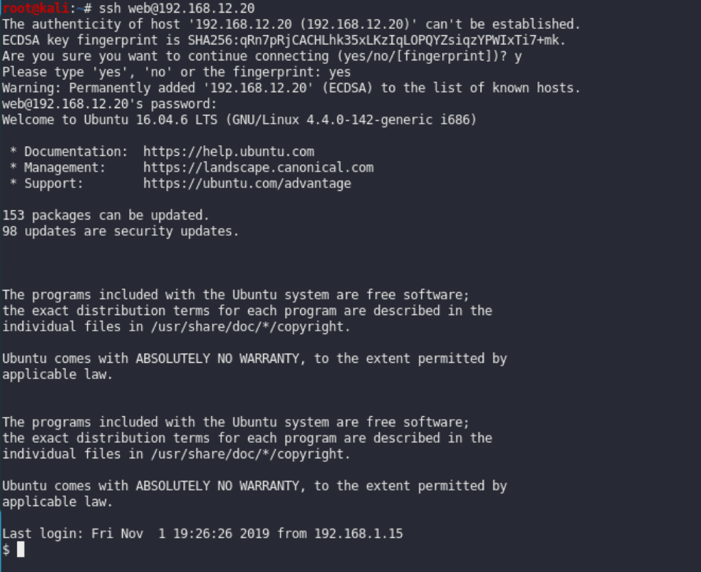
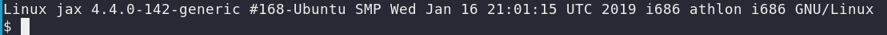
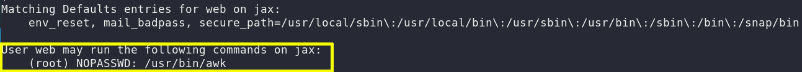

7. SSH
We got a username and a password! Time to SSH.
Output:

We’re in! 😃 But we still need to escalate our privileges to get the final flag which should be under the root account.
Let's see the OS type and version.
Output:

Let list user's privileges.
Output:

We can see that user “web” can run the “awk” command without being root and with no password.
 Index
Index